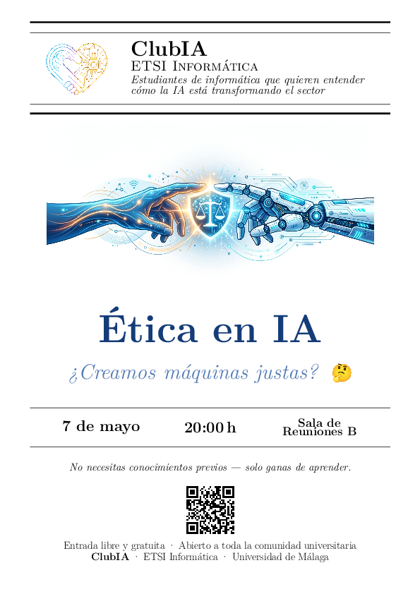

Sesión 1
Kickoff - 14/04/2026
Primera actividad del club. Estas son las líneas de trabajo que se acordaron para sesiones públicas, experimentos y recursos para la escuela.
- Dependencia cognitiva de la IA (sesión pública). Propuesta de Lucía; buscar ponente de Psicología (Dpto. Personalidad).
- Oportunidades y amenazas para el sector informático (sesión pública). Propuesta de Cristian para debatir impacto laboral y técnico de la IA.
- Ciberseguridad post-IA (sesión pública). Propuesta de Víctor con intervención de Ale.
- Qué nos enseña la IA y límites en tareas creativas (sesión pública). Propuesta de Celia y Víctor, con intervención de FV y referencia al documental AlphaFold.
- Ética en el uso de la IA generativa (sesión pública). Propuesta de Hugo; buscar ponente (Víctor Muñoz).
- Manual de uso de la IA y curso cero (proyecto educativo). Crear una guía para la escuela y plantear un curso cero junto con Linux (OpenBokeron).
Sesión 2
Dependencia cognitiva - 23/04/2026
En esta sesión, se presentó un vídeo y varios estudios que advertían sobre como cada vez dependemos más de la inteligencia artificial y esto es un gran problema de cara al futuro debido a que podríamos perder capacidades mentales, ya que nuestro cerebro "no hace grandes esfuerzos" en la mayoría de las situaciones, acudimos a la IA hasta para tareas muy sencillas como una pequeña búsqueda o cálculo trivial. Debatimos ampliamente sobre este tema y sacamos diversas conclusiones de cara al futuro:
- Incluir estudio de deuda cognitiva en el Observatorio para medir riesgos y evolución en el uso cotidiano de IA.
- Realizar entrevistas a desarrolladores senior en empresas malagueñas sobre su uso de la IA: más fácil en texto y más complejo en videollamada.
- La IA es una herramienta potencialmente igualitaria y puede contribuir a reducir desigualdades si su uso es inclusivo y responsable.
- Video de la sesión: https://github.com/fossuma/clubia/tree/main/sesiones/20260423_dependencia_ia/video_sesion_2
- Video original: https://www.youtube.com/watch?v=4xq6bVbS-Pw
- Encuesta sobre dependencia cognitiva: https://journals.co.za/doi/full/10.38140/ijspsy.v5i3.2106/
Sesión 3
Ciberseguridad post-IA - 30/04/2026
Sesión 4
Ética en el uso de la IA generativa - 07/05/2026
Sesión 5
Qué nos enseña la IA - 14/05/2026
Sesión 6
Oportunidades y amenazas - 21/05/2026
Selección de artículos y recursos de interés curada por el equipo del club.
Cargando noticias…
Herramientas
Enlaces y contribución
Para participar en la documentación del club, clona el repositorio y comparte propuestas para siguientes sesiones.
git clone https://github.com/umafoss/clubia.gitSi ya formas parte del club, puedes abrir issues o pull requests en github.com/umafoss/clubia.